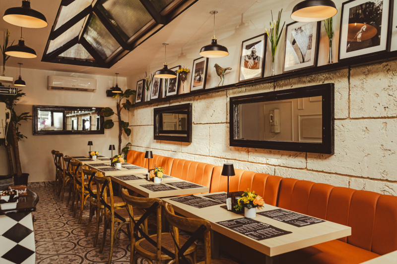
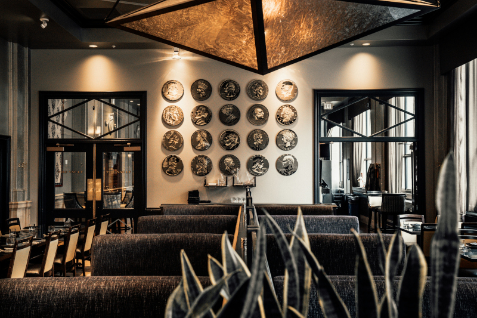

Oltre il bordo
c'è la vera pizza napoletana
Una pizza che nasce dall’incontro tra Napoli e Roma
La nostra storia
Bordo5 nasce dal desiderio di portare in tavola l'autentica tradizione della pizza verace napoletana. Quello che era iniziato come un progetto mosso dalla pura passione, si è trasformato negli anni in una realtà consolidata e amata dai nostri clienti, che ritrovano nei nostri locali il gusto genuino delle origini. Per noi, qualità e tradizione viaggiano sullo stesso binario: è proprio questa filosofia che ha decretato il successo del nostro brand, permettendoci di aprire un nuovo locale a Roma. Il nostro obiettivo è offrire non solo una pizza, ma un’esperienza: un momento di convivialità che richiama i sapori, i profumi e l’atmosfera tipica delle pizzerie di una volta.
Tradizione e lievitazione
Per la lavorazione del nostro impasto utilizziamo farine di grano tenero selezionato, come quelle del mulino Caputo, e il nostro lievito madre,“O’ Criscite”, custodito e rinfrescato ogni giorno secondo tradizione. L’ impasto nasce da ingredienti semplici ma scelti con cura, lavorati nel rispetto dei tempi naturali e della vera arte pizzaiola napoletana. La lievitazione avviene lentamente, tra le 24 e le 48 ore, così da garantire un impasto leggero, fragrante e altamente digeribile. Ogni passaggio è frutto di esperienza, passione e rispetto per la vera pizza napoletana.Il risultato è una pizza che racconta il territorio, la cultura e la storia della grande scuola napoletana, portando in tavola un equilibrio perfetto tra semplicità, autenticità e gusto.
Bordo e Anima
Il bordo è l’anima della nostra pizza, la parte che racconta davvero tutta la sua identità napoletana. Nasce da un impasto lavorato con pazienza, realizzato con farine selezionate e lasciato maturare lentamente, così da sviluppare un bordo leggero, altamente digeribile e naturalmente ben alveolata. Durante la cottura ad alta temperatura, il cornicione si gonfia in modo spontaneo, creando quella consistenza alta, soffice e fragrante che rende ogni morso unico. Ma il nostro bordo non è soltanto tradizione: è anche creatività e gusto. In alcune delle nostre pizze diventa infatti un vero protagonista, trasformandosi in un cornicione ripieno, con ingredienti selezionati e abbinamenti che cambiano seguendo la stagionalità, per esaltare ogni periodo dell’anno con sapori autentici e genuini.
Esperienza d’asporto
Durante il weekend o negli orari di maggiore affluenza, i tempi di attesa potrebbero variare. Per garantire un servizio più rapido ed efficiente, consigliamo di effettuare l’ordine con anticipo e di rispettare l’orario di ritiro concordato. Il ritiro avviene direttamente presso la nostra pizzeria all’orario indicato al momento dell’ordine. Per esigenze alimentari, allergie o intolleranze, vi invitiamo a segnalarle al momento dell’ordine: il nostro staff sarà lieto di assistervi nella scelta delle proposte più adatte. Alcuni ingredienti seguono la stagionalità e potrebbero pertanto non essere sempre disponibili.
Cosa dicono di noi
Le opinioni dei nostri clienti
Dove siamo e contatti
Siamo presenti a Napoli e Roma per portare la nostra cucina in due delle città più vive d’Italia.
Vieni a trovarci o contattaci per prenotazioni e informazioni.


Napoli - Via Bisignano, 71 - Chiaia
Martedì - Venerdì: 19:00 - 23:30
Sabato e Domenica: 19:00 - 00:00
Lunedì: Chiuso
Roma - Via Oslavia, 42 - Prati
Martedì - Venerdì: 19:00 - 00:30
Sabato e Domenica: 19:00 - 00:30
Lunedì: Chiuso